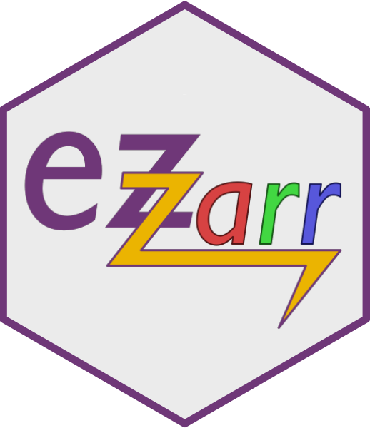

Welcome to ez_zarr
Goals
The aim of ez_zarr is to provide easy, high-level access
to OME-Zarr filesets (high content screening microscopy data, stored
according to the NGFF
specifications in OME-Zarr with additional metadata fields, for
example the ones generated by the Fractal platform).
The goal is that users can write simple scripts working with plates, wells and fields of view, without having to understand how these are represented within an OME-Zarr fileset.
In addition to the python package, we also provide an R package
that automatically generates and wraps a python environment with
ez_zarr and all dependencies, available at https://github.com/fmicompbio/ezzarr.
Example
You can use ez_zarr from the command line to get information about an OME-Zarr fileset:
or from within python to get access to all its functionality:
## import module
from ez_zarr import ome_zarr
## open an Image
img = ome_zarr.Image('tests/example_data/plate_ones_mip.zarr/B/03/0')
img
# Image 0
# path: tests/example_data/plate_ones_mip.zarr/B/03/0
# n_channels: 2 (some-label-1, some-label-2)
# n_pyramid_levels: 3
# pyramid_zyx_scalefactor: [1. 2. 2.]
# full_resolution_zyx_spacing (micrometer): [1.0, 0.1625, 0.1625]
# segmentations: organoids
# tables (measurements): FOV_ROI_table
## legacy objects from `hcs_wrappers`
from ez_zarr import hcs_wrappers
plate_3d = hcs_wrappers.FractalZarr('tests/example_data/plate_ones.zarr')
plate_3d
# FractalZarr plate_ones.zarr
# path: tests/example_data/plate_ones.zarr
# n_wells: 1
# n_channels: 2 (some-label-1, some-label-2)
# n_pyramid_levels: 3
# pyramid_zyx_scalefactor: {'0': array([1. 2. 2.])}
# full_resolution_zyx_spacing: [1.0, 0.1625, 0.1625]
# segmentations:
# tables (measurements): FOV_ROI_table
A more extensive example is available from here, also available as an ipynb notebook.
Install
ez_zarr is available for all major platforms (macOS, Linux and Windows) and modern versions of python. It can be installed using pip or conda:
Using pip


The release version of ez_zarr can be installed using pip:
To install also the dependencies required for running unit tests or to download the example data and run the examples given in the documentation, install ez_zarr with the dev and doc extras, respectively:
The current (development) version of ez_zarr can be installed from github.com using:
Using conda


Alternatively, you can install ez-zarr from the conda-forge channel using:
Software status


Supported versions of zarr
ez-zarr currently supports OME-Zarr v0.4 and v0.5 (corresponding to version 2 and 3 of the zarr format, and thus version 2 and 3 of the zarr python package). OME-Zarr v0.5 support was introduced in ez-zarr v0.4.0.
Contributors and License
ez_zarr is released under the MIT License, and the copyright
is with the Friedrich Miescher Insitute for Biomedical Research
(see LICENSE).
ez_zarr is being developed at the Friedrich Miescher Institute for
Biomedical Research by @silvbarb, @csoneson and @mbstadler.
Need help?
If you run into problems when using ez_zarr, please first check whether the
answer is available in the help pages for the individual functions underneath 'Documentation' or in
the 'Getting started' vignette.
If not, please open an issue
and explain your problem. Try to provide a reproducible example, and always
include the code you used, that will make it much easier for us to help.
Contributions
If you would like to contribute to ez_zarr, you can do so by sending a pull
request to this repository. If the contribution involves changes in the
functionality provided by ez_zarr, we encourage you to first open an issue
to discuss the intended contribution.